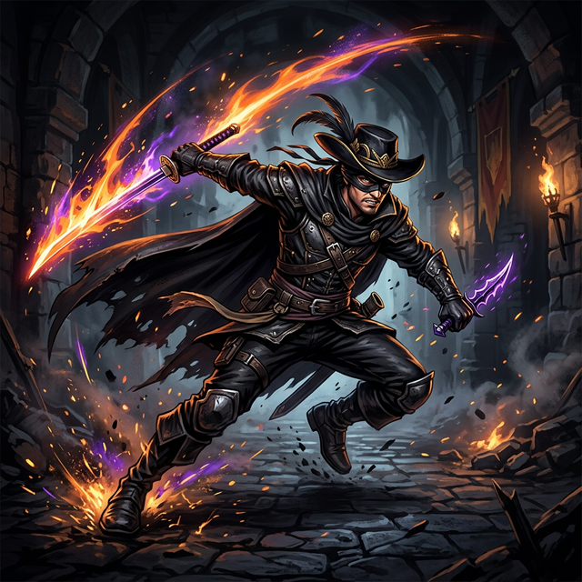

Equip the Bandit. Master the Dexecutioner. Become an untouchable whirlwind of critical strikes and executions. Here is the ultimate 2026 meta loadout.

If you're searching the community for the infamous "Zorro Build," you're actually looking for the optimal progression path for the masked character officially known as the Bandit. Armed with incredible innate attack speed and an affinity for slashing weapons, the Zorro playstyle dominates the current tiered meta by focusing not on raw damage, but on Executions.
As you progress to Tier 3 maps (such as fighting the Forest Tier 3 Boss), normal enemy health pools inflate exponentially. Trying to chip them down with regular base damage becomes extremely inefficient. The Bandit thrives because his extreme attack speed allows him to trigger "Instant Kill" (Execution) percentage chances rapidly.
To make this work flawlessly, you must hyper-focus on drafting the correct combination of fast-hitting weapons and precision Tomes. Missing out on specific legendary synergies early means you should seriously consider restarting your run.
A true Zorro build balances close-quarters slashing with powerful crowd-control defensive perimeters.
The core of the build. The Bandit's starter weapon scales magnificently with Quantity and Cooldown Tomes. Each instance has an intrinsic chance to cull weaker enemies instantly.
The perfect thematic fit. The Katana provides massive critical damage multipliers. When it sweeps across the screen with maxed-out Attack Speed, it guarantees dense packs melt before touching you.
Since the Zorro build operates entirely in melee or mid-range, you must have Aura active. It pushes back light enemies, ensuring you don't get swarmed while your blades are working.
An alternative to full-melee. The Revolver provides much-needed precise damage from across the screen to quickly dispatch dangerous stationary elites that spam projectiles.
If you take nothing else away from this guide, remember this selection. These items turn an average run into a god-run.
The single most important item for this build. It grants a flat % chance to instantly execute an enemy. Because you are attacking 10+ times a second with the Dexecutioner and Katana, you will trigger this constantly.
Boosts Critical Chance. For more Tome rankings, see our full Best Tomes Tier List. On Bandit, Crits equate to wave clears.
Grants an automatic +1 to all weapon upgrade stats. Since you are building a wide arsenal to hit multiple times, the Anvil guarantees all your weapons reach their power spikes early.
Grab these immediately in Wave 1 and 2. Fast tracking your levels ensures you don't fall behind the insane enemy scaling curve of late-game Megabonk.
A: "Zorro" is purely a community nickname. In-game, the character is called Bandit. He earned the nickname due to his masked face, high agility, and affinity for slashing weapons.
A: The build is completely reliant on extremely high Attack Speed and Critical Procs. By combining weapons that hit rapidly with items like Joe's Dagger, you can bypass huge enemy health pools via instant executions.
A: Alongside your starter Dexecutioner, always prioritize picking up the Katana for dense sweeping crits, and the Aura to provide a reliable defensive perimeter.